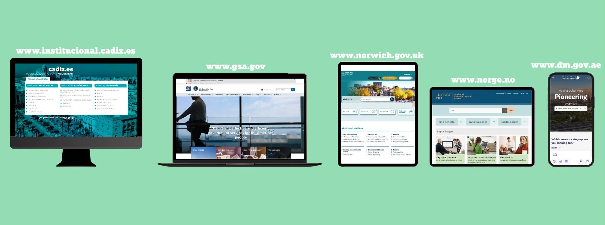
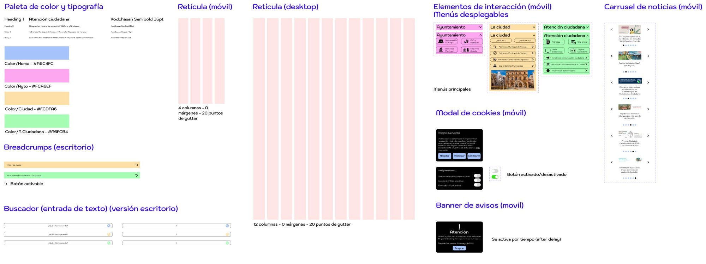
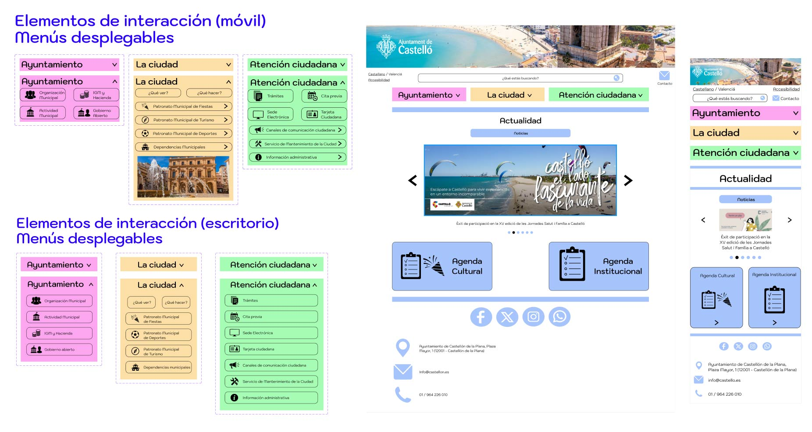

Transformación digital de la plataforma institucional del Ayuntamiento de Castellón mediante un diseño Mobile-First que prioriza la accesibilidad y la experiencia ciudadana
La web del Ayuntamiento de Castellón requería una actualización integral para adaptarse a los estándares actuales de diseño y usabilidad. Como institución pública, necesitaba ofrecer numerosas funciones a todos los habitantes del municipio de forma intuitiva y accesible. El desafío consistía en equilibrar la densidad informativa propia de una web institucional con la simplicidad necesaria para que todo tipo de usuarios pudieran realizar sus trámites cómodamente.
Crear un diseño sencillo, intuitivo y atractivo que permita a todos los ciudadanos, independientemente de su nivel tecnológico, acceder fácilmente a los servicios municipales. El objetivo principal era transmitir un tono accesible mediante una paleta simple de 4 colores principales y una iconografía clara que mejore la navegación. Se buscaba aplicar un enfoque Mobile-First que priorice la experiencia en dispositivos móviles, garantizando accesibilidad y facilitando la gestión de trámites administrativos.
Ciudadanos de Castellón con perfiles muy diversos: desde personas mayores con manejo limitado de tecnología hasta usuarios con discapacidad visual, pasando por ciudadanos que buscan realizar trámites cotidianos. La diversidad del público objetivo demanda un diseño inclusivo que cumpla con estándares de accesibilidad y ofrezca una experiencia consistente entre plataformas web y móvil.
El proceso comenzó con un benchmarking exhaustivo de 5 sitios web gubernamentales de referencia: Ayuntamiento de Cádiz (España), GSA - General Services Administration (Estados Unidos), Norwich City Council (Reino Unido), Norway Gateway to Digital Public Services (Noruega), y Dubai Municipality (Emiratos Árabes Unidos). Los criterios de análisis incluyeron estructura de la información, diseño mobile-first, atractivo visual y nivel de accesibilidad. Esta investigación permitió identificar patrones efectivos como menús en cascada, uso del color para delimitar funciones, iconografía intuitiva y cabeceras atractivas con elementos institucionales.
La paleta de color se simplificó a 4 colores principales, cada uno asignado a una sección del sitio web para facilitar la navegación. Se incorporaron menús en cascada que distribuyen la información eficazmente con un funcionamiento intuitivo. Los iconos son grandes y representan claramente la acción que llevan a cabo, mejorando la cohesión del contenido. Se diseñó una cabecera con el escudo y nombre del ayuntamiento junto con fotografía de la ciudad, comunicando claramente el propósito institucional. Se implementaron enlaces rápidos mediante botones iconográficos, banner de avisos con delay, modal de cookies configurable, y retículas de 4 y 12 columnas con espaciado de 20px. Los estilos de tipografía se redujeron a 4: 2 para cabeceras y 2 para cuerpos de texto e iconos.
El mayor desafío fue encontrar el equilibrio entre estética moderna y accesibilidad para un público muy diverso. Adaptar el diseño para que ambas versiones (móvil y escritorio) muestren un enfoque mobile-first requirió múltiples iteraciones. La selección de una paleta de color válida para delimitar secciones manteniendo un estilo actual demandó varias pruebas hasta lograr un resultado satisfactorio. Garantizar que la iconografía sea precisa y comprensible para la mayoría del público, manteniendo cohesión con el estilo general, requirió especial atención. Finalmente, priorizar la experiencia del usuario en todas las decisiones de diseño cuando se trabaja con instituciones públicas supuso un reto de gestión de requisitos institucionales vs. necesidades ciudadanas.
Herramienta principal para el diseño completo: prototipo móvil interactivo, prototipo escritorio interactivo, guía de estilo y mockups. Permitió visualizar y testear rápidamente diferentes versiones del diseño.
Metodología aplicada desde el inicio para garantizar que la experiencia en dispositivos móviles sea prioritaria y óptima, adaptándose progresivamente a versiones de escritorio.
Análisis comparativo de 5 webs gubernamentales internacionales evaluando estructura de información, diseño mobile-first, atractivo visual y accesibilidad para identificar mejores prácticas.
Creación de sistema de diseño con paleta de 4 colores, 4 estilos tipográficos, retículas de 4 y 12 columnas, iconografía cohesiva y componentes reutilizables (menús, modales, banners, formularios).